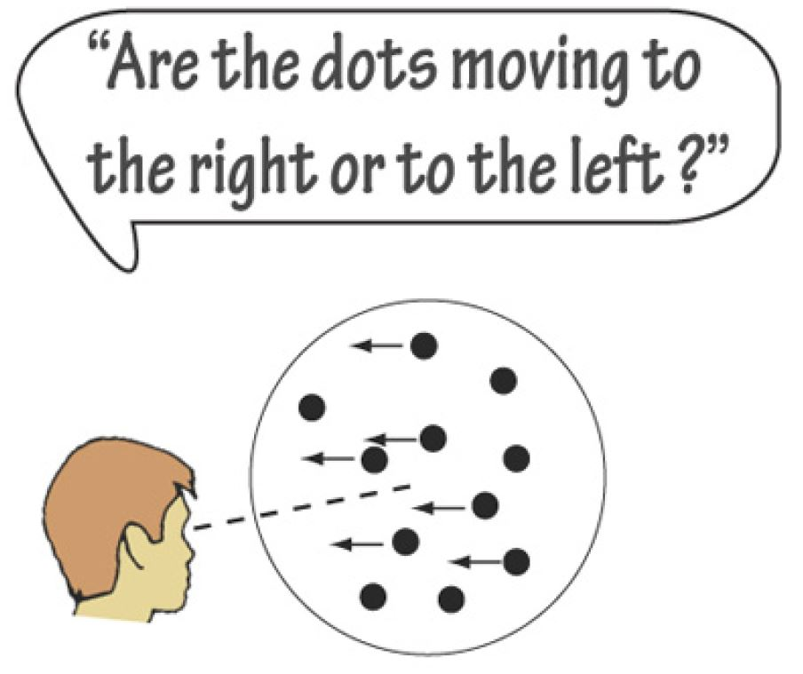

Verhaltensexperiment mit PsychoPy
Gerda Wyssen ![]()
Neurowissenschaftliche Experimente müssen exakt auf die Fragestellung zugeschnitten werden um aussagekräftige Daten zu liefern. Deshalb programmieren die meisten Forschenden ihre Experimentalparadigmen selbst. So können beispielsweise Instruktionen oder verwendete Stimuli, deren Grösse und Anzeigedauer präzise definiert werden. In dieser Sitzung erstellen wir mit PsychoPy ein perzeptuelles Entscheidungsexperiment, ähnlich dem Experiment aus Mulder et al. (2012). Dieses neurowissenschaftliche Experiment untersucht den Einfluss von Vorwissen auf Entscheidungsverhalten von Menschen sowie die dazugehörigen neuronalen Korrelate.
Einleitung
Jeden Tag treffen wir Tausende von kleinen Entscheidungen, meistens unter gewissem Zeitdruck. Viele davon sind trivial (z. B. welches Paar Socken man anzieht) und automatisch (z. B. ob man die Espresso- oder Lungo-Taste auf der Kaffeemaschine drückt).
Perzeptuelle Entscheidungen sind Entscheidungen, welche auf der Wahrnehmung, Einordnung und Integration von Sinnesreizen beruhen. Um beispielsweise eine Strasse sicher überqueren zu können, müssen wir mittels den Sinnesinformationen der Augen und Ohren sowie der Verarbeitung dieser Reize einschätzen mit welcher Geschwindigkeit ein herannahendes Auto unterwegs ist und ob wir lieber abwarten bis es vorbeigefahren ist. Innerhalb der Neurowissenschaften wird perceptual decision making untersucht, um die neuronalen Schaltkreise welche Wahrnehmungssignale kodieren, speichern und analysieren zu verstehen und mit beobachtbarem Verhalten in Verbindung zu bringen. Von Interesse ist zum Beispiel wie die Entscheidung ausfällt, wenn die sensorischen Daten undeutlich oder sogar widersprüchlich sind. Besonders spannend ist auch wie Vorwissen (prior knowledge) auf das Entscheidungsverhalten einwirkt.
- In welchen Situationen treffen wir perzeptuelle Entscheidungen?
- Wo ist der Einfluss von Vorwissen auf perzeptuelle Entscheidungen alltagsrelevant?
Diskutieren Sie die Fragen in kleinen Gruppen und finden Sie je 3 Beispiele.
Obwohl das Treffen von Entscheidungen für uns etwas sehr Vertrautes ist, ist das Wissen darum, wie das Gehirn diese Entscheidungsaufgaben löst noch sehr begrenzt. Eine einzelne Entscheidung kann schon sehr komplex sein. Um die Dynamik der Entscheidungsfindung zu verstehen, konzentrieren sich die meisten Studien deshalb auf einfache, wiederholbare Wahlprobleme mit nur zwei (binären) Antwortmöglichkeiten. Ein typisches Paradigma in neurowissenschaftlichen Studien ist das random-dot motion paradigm. Hierbei muss eine Person entscheiden in welche Richtung sich eine Punktewolke bewegt.
Experiment
Das Experiment Bias in the brain von Mulder et al. (2012) ist eine Reaktionszeit (RT) Version eines random-dot motion direction discrimination task. In diesem Paradigma sieht die Versuchsperson sich bewegende Punkte, die sich in unterschiedliche Richtungen bewegen. Ihre Aufgabe ist es zu entscheiden, ob sich die Punkte mehrheitlich nach rechts oder nach links bewegen. Bei einem Kohärenzniveau von beispielsweise 80% bewegen sich 80% der Punkte in dieselbe Richtung. Die Aufgabenschwierigkeit steigt je tiefer das Kohärenzniveau ist.

Mulder et al. (2012) haben untersucht, wie Vorwissen (prior knowledge) den Entscheidungsprozess in einem random-dot motion task beeinflusst, und ob es ein neuronales Korrelat für solches Vorwissen gibt. Aus diesem Grund haben sie zwei verschiedene Formen von Vorwissen benutzt:
prior probability: Die a priori Wahrscheinlichkeit, dass die Punktwolke sich nach rechts oder nach links bewegen wird.
potential payoff: Eine assymmetrische Belohnung für korrekte links/rechts Entscheidungen.
Wie wirken sich die beiden Formen von Vorwissen auf das Antwortverhalten aus?
Bei welcher Bedingung antworten die Personen schneller?
Wo machen sie mehr Fehler?
Was denken Sie? Diskutieren Sie die Fragen in kleinen Gruppen ohne im Paper nachzuschauen.
Das Vorwissen (auch bias) der Versuchsperson wird in diesem Experiment durch einen Hinweisreiz (cue) in Form eines Pfeils oder eines neutralen Stimulus operationalisiert. Der Pfeil zeigt die wahrscheinlichere Bewegungsrichtung an. Vor und nach dem Cue wird ein Fixationskreuz gezeigt. Alle weiteren Parameter können Sie dem Paper entnehmen (Mulder et al. 2012).

Schauen Sie sich in PsychoPy die verschiedenen möglichen Bausteine für Experimente an. Versuchen Sie Stück für Stück das Experiment von Mulder et al. (2012) nachzubauen.
Hilfreiche Informationen zum Erstellen von Experimenten in PsychoPy finden Sie hier:
Untenstehend finden Sie einige wichtige Informationen über das Experiment.
Ablauf
Das Experiment besteht aus der Instruktion, mehreren Versuchsblöcken und der Nachbesprechung. Die Anweisungen und die Nachbesprechung sind Textanzeigen, während die Versuche (und die Versuchsblöcke) etwas komplizierter sind.
Trial
Zunächst wird ein Fixationskreuz entweder für 100 ms, 350 ms, 800 ms oder 1200 ms angezeigt. Die tatsächliche Dauer wird für jeden Versuch randomisiert. Eine solche Randomisierung kann nicht über die Benutzeroberfläche vorgenommen werden, sondern erfordert ein kleines Stück Python-Code. Sehen Sie sich den Codeblock der Routine Fixation_pre_cue an, um zu erfahren, wie dies erreicht werden kann.
Anschließend wird für 1000 ms ein Hinweis (cue) präsentiert. Dabei kann es sich entweder um einen Pfeil handeln, der nach rechts zeigt, einen Pfeil, der nach links zeigt, oder einen einfachen Kreis (für die Kontrollbedingung). Der Codeblock in der Cue-Routine legt den tatsächlichen Hinweis für jeden Versuch auf der Grundlage der Schleifenvariablen cue fest.
Nach dem Cue wird ein weiteres Fixationskreuz präsentiert - dieses Mal für entweder 3400 ms, 4000 ms, 4500 ms oder 5000 ms. Wie beim ersten Fixationskreuz wird die tatsächliche Dauer zufällig gewählt.
Nach dem zweiten Fixationskreuz wird für 1500 ms der eigentliche Stimulus angezeigt: ein random dot kinematogram (RDK). Die Punkte bewegen sich entweder nach rechts oder nach links mit einem Kohärenzniveau von 8%. Die Bewegungsrichtung eines einzelnen Versuchs wird durch die Schleifenvariable direction bestimmt und im Codeblock der Routine Dots festgelegt. Die Teilnehmer müssen entscheiden, welche Richtung sie wahrnehmen, und können ihre Antwort durch Drücken der linken oder rechten Pfeiltaste auf der Tastatur eingeben.
Schließlich wird ein Feedback-Bildschirm angezeigt. Wenn der Teilnehmer innerhalb der ersten 100 ms geantwortet hat, wird der Hinweis “zu schnell” angezeigt. Wurde während des gesamten Stimulus keine Antwort erfasst, wird das Wort “miss” angezeigt. War die Antwort richtig, wird “+5 Punkte” angezeigt, war sie falsch, wird “+0 Punkte” angezeigt.
Experimentalschleife: main_blocks_loop
Mit loops in PsychoPy haben wir die Möglichkeit, eine oder mehrere Routinen zu wiederholen. In diesem Experiment wird dies genutzt, um denselben Versuch (wie oben beschrieben) mehrfach zu zeigen, aber jedes Mal mit anderen Werten für die loop variables. Eine Schleife wiederholt also einen Versuch einige Male, wobei die Schleifenvariablen bei jeder Wiederholung geändert werden. Der Versuch selbst wiederum liest diese Schleifenvariablen aus, um z.B. zu wissen, ob sich die Punkte nach rechts oder nach links bewegen sollen. Hier wird nur die main_blocks_loop erklärt, aber das Prinzip gilt auch für die practice_block_loop.
Um die verschiedenen Werte für die Schleifenvariablen zu definieren, müssen wir eine einfache CSV-Datei erstellen:
cue,direction
left,right
left,left
none,right
...Diese CSV-Datei (die Bedingungsdatei) definiert die beiden loop Variablen cue und direction. Das Stichwort kann entweder left, right oder none, sein, während die Richtung left oder right sein kann.
In der Benutzeroberfläche können wir die Variablen loopType und nReps für die Schleife angeben, wenn wir sie anklicken. Mit ersterer können wir steuern, ob wir z.B. die Zeilen in der Bedingungsdatei mischen oder sie sequentiell von oben nach unten ablaufen lassen wollen, während die letztere definiert, wie oft jede Zeile der Bedingungsdatei wiederholt werden soll.
Für die main_blocks_loop haben wir eine Bedingungsdatei mit 80 Zeilen, die 40 neutralen Versuchen und 40 verzerrten Versuchen entsprechen. In der einen Hälfte der neutralen Trials bewegen sich die Punkte nach rechts, in der anderen Hälfte nach links. Bei den voreingenommenen Versuchen sind 32 der Hinweise gültig (d. h. sie stimmen mit der Bewegungsrichtung der Punkte überein) und 16 ungültig, wobei sich die Punkte sowohl bei gültigen als auch bei ungültigen Hinweisen in 50 % der Versuche nach rechts und in den anderen 50 % der Versuche nach links bewegen.
Die Variable nReps wird auf 2 gesetzt, so dass alle diese Reihen zweimal durchlaufen werden (insgesamt 160 Versuche), und die Variable “loopType” wird auf random gesetzt, so dass die Versuche in zufälliger Reihenfolge durchgeführt werden.
Daten
Wenn man die default-Einstellungen nicht ändert, speichert PsychoPy die Daten automatisch in einem trial-by-trial CSV File. Das bedeutet, dass jeder Trial 1 Zeile generiert. Das CSV File erhält einen Namen, der sich aus der Versuchspersonen-ID, dem Namen des Experiments, und dem aktuellen Datum inkl. Uhrzeit zusammensetzt. So ist es möglich, mit derselben Versuchspersonen-ID beliebig oft das Experiment zu wiederholen. Die CSV Files werden in einem Ordner mit dem Name data abgelegt.
Degrees of Visual Angle
Oftmals werden Grössenangaben von Stimuli noch in Pixel oder Zentimeter, sondern in degrees of visual angle gemacht. Dies hat den Vorteil, dass die Angaben nicht vom Monitor selber oder der Entferung vom Monitor abhängig sind. Degrees of visual angle gibt die wahrgenommene Grösse des Stimulus an, und berücksichtigt die Grösse des Monitors und des Stimulus, und die Entfernung der Versuchsperson vom Monitor. Weitere Informationen dazu finden Sie auf der Website von 👉 OpenSesame. Üblicherweise entspricht ein degrees of visual angle etwa einem cm bei einer Entfernung von 57 cm vom Monitor.
Zur Umrechnung zwischen cm und degrees of visual angle finden Sie unter diesem 👉 Link mehr Information.
References
Reuse
Citation
@online{ellis,
author = {Ellis, Andrew and Wyssen, Gerda},
title = {Verhaltensexperiment Mit {PsychoPy}},
url = {https://kogpsy.github.io/neuroscicomplabFS23//pages/chapters/psychopy_experiments.html},
langid = {en}
}